
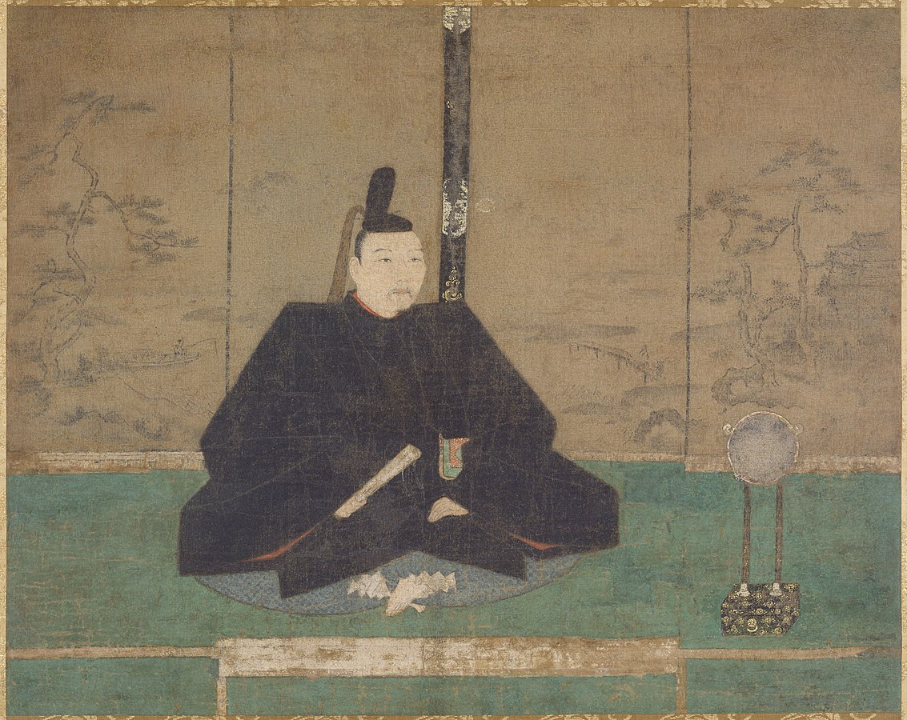
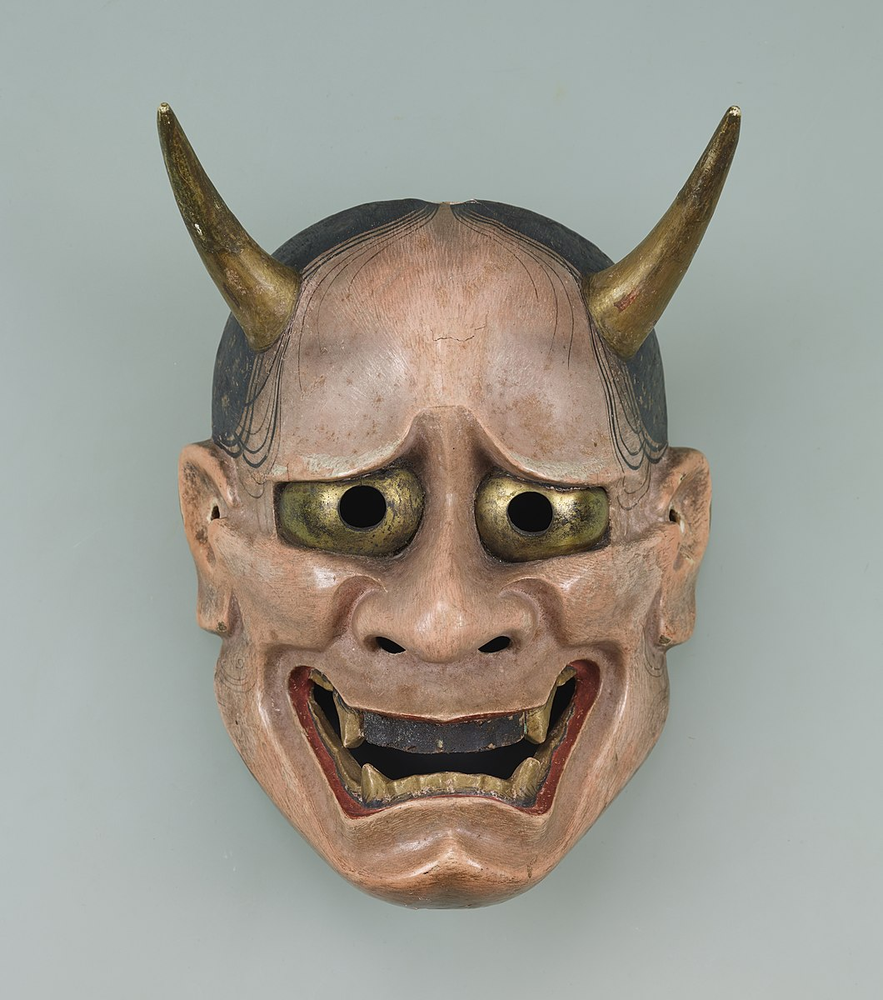
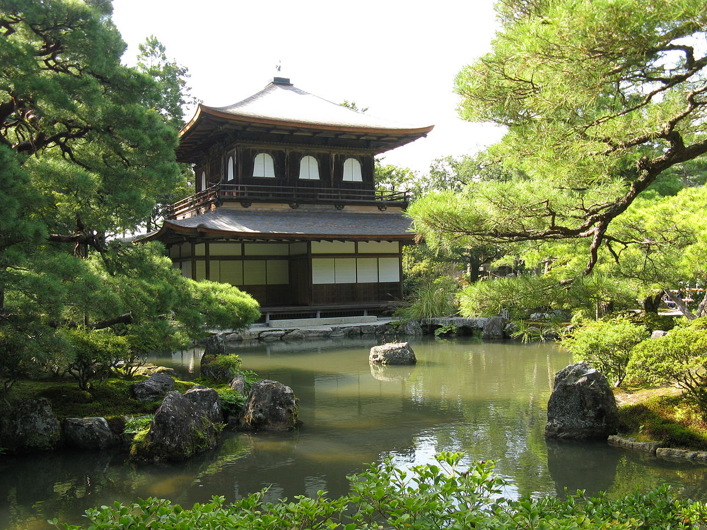
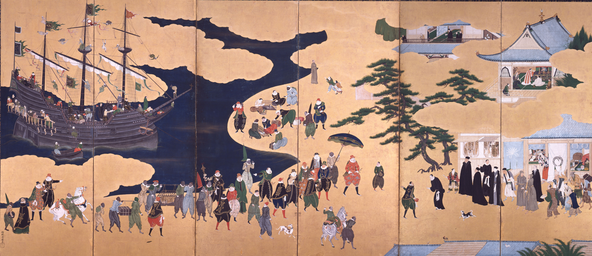
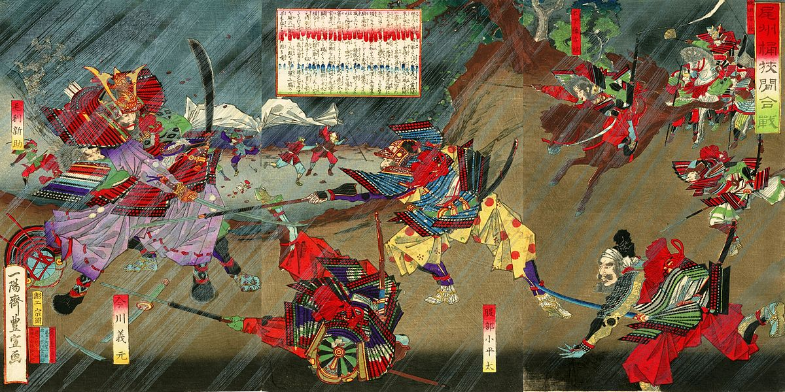

The second shogunate in Japanese history was the Ashikaga shogunate, also referred to as the Muromachi Bakufu as their headquarters were located in Kyoto's Muromachi district. In order to legitimise his position, Ashikaga Takauji, the head of the Ashikaga, ousted Emperor Go-Daigo from Kyoto and installed a relative to the throne from an opposing branch of the Imperial family, the Emperor Kōmyō. This Ashikaga-backed court is the Northern Court, while Go-Daigo's court in Yoshino was the Southern Court. In 1338, Ashikaga Takauji would be named as shogun. The Northern Court emperors were not seen as the legitimate emperors as they did not possess the Imperial regalia, which were three sacred treasures that signified the emperor's authority. The regalia was in the possession of the Southern Court. The period from 1336 to 1392 is known as the Nanboku-chō period, and it was a period of civil war between these two courts by forces and clans loyal to them.
Although Takauji was the shogun, he was primarily occupied with military affairs in the war against the Southern Court, and in his place to govern the country was his brother Tadayoshi. By 1350, however, their relationship began to falter and Tadayoshi ended up rebelling against Takauji in 1351 and joined the Southern Court forces. An attempt was made that same year to negotiate a peace settlement and reunification between the two courts but they were unsuccessful. By 1352, Tadayoshi was captured in battle by Takauji, and later died in confinement. The Southern Court soon succeeded in capturing Kyoto and driving out the Northern Court armies. This was short-lived and the Ashikaga forces retook the city. The capital would change hands numerous times over the next few years. In 1358, Ashikaga Takauji died and was succeeded as shogun by his son Yoshiakira. The war continued on under his tenure and into the 1360s.
It was in 1368 that Yoshiakira was succeeded by Ashikaga Yoshimitsu, who would prove to be arguably the most powerful of the Ashikaga shoguns. The war with the Southern Court was still waged, though while the Southern Court gradually weakened the Ashikaga gained the upper hand. By the 1390s, they were no longer able to sustain their war effort and were forced into negotiation. The end of the war came in 1392, when the Southern Court finally surrendered their claim to the throne and handed over the Imperial regalia to the Northern branch, whose emperor became the recognised soverign. It is notable that the current Imperial family descends not from the southern, legitimate line, but instead from the Northern pretender line. Ashikaga Yoshimitsu now consolidated his power with the return of peace. He managed to greatly centralise the power of his regime, which was not entirely possible during the previous decades of civil war. His rule over Japan is manifested by some of the material remnants of his day, the most famous example being the Kinkaku-ji in northern Kyoto, constructed in 1399 as a Zen Buddhist temple and villa for Ashikaga Yoshimitsu. Yoshimitsu's rule also saw the re-establishment of trade with China, relations with which was continually plagued by the activities of the Wako, who were bands of Japanese pirates who continually plundered the coasts of China.
The shoguns who followed after Yoshimitsu did not have the same skill and were often imprudent or uninterested in affairs of government. The war between the Northern and Southern Courts which comprised the first few decades of Ashikaga rule kept the new Bakufu occupied with military affairs and they were unable to fully asset their authority across the country, especially peripheral areas in the east and west of the country. This allowed for the growing independence and autonomy of a new class of provincial warlords who began to ignore the directives of the central government in the mid-fifteenth century. This would culminate in 1467 with the start of the Onin War and the beginning of the Sengoku period, or the period of Warring States.
Zen Buddhism had a marked influence on the arts and culture of the Muromachi age. This coupled with the new wave of cultural intercourse with China, now ruled by the Ming Dynasty, resulted in new styles of art being developed in Japan. Yoshimitsu's successors, as has been mentioned, were less interested in governing the realm and were more inclined towards consuming the arts. The strong central authority carefully instituted by Yoshimitsu slowly ebbed away as the provincial and war-driven magnates became more autonomous and confident in governing themselves. This new class of provincial warlords were known as daimyo, and they dominate the rest of the political history of the Muromachi period. The Ashikaga shoguns chose to sit back and were content with their position as patrons of the new art culture that arose.
In the realm of art, new styles of painting were introduced from China. The most notable was sumi-e, which were monochrome ink paintings which commonly portrayed landscapes according to Zen ideals. The monochrome nature and the simple compositions of landscapes were based on Zen concepts of simplicity and a focus on the essential details and characters of the natural world. Sumi-e paintings could also be portraits, usually of religious figures; many portraits exist in this style depicting Bodhidharma, the founder of Zen Buddhism. The main proponent of the sumi-e and suibokuga techniques was Sesshū Tōyō (1420-1506), a Zen monk who trained in China and who was greatly inspired by Chinese landscape ink paintings. His surviving works are designated as national treasures, such as Winter Landscape and Landscapes of the Four Seasons. His artwork would greatly influence later schools of art in Japan, which catered for the artistic needs of the ruling class.

Landscapes of the Four Seasons by Sesshū Tōyō c.15th century
The Muromachi period also the development of drama and theatrical arts in the form of Noh theatre. Noh can best be explained as a elegant and refined form of dance-drama which draws heavily on Zen concepts and stories from Japanese history for the themes of its plays. The use of masks in Noh theatre is a essential aspect of the art form, and take a variety of forms from expressionless faces to scowling demons. The wearing of masks required the actors to express emotions through gestures and dance and good vocal dexterity was needed. Iconic Noh plays were written during the Muromachi period, with plays by figures such as Zeami Motokiyo being popular. Noh theatre was primarily an art form reserved and enjoyed by the ruling class, and it would remain so throughout the rest of Japanese history. In fact, the shogun Ashikaga Yoshinori was assassinated in 1441 while watching a Noh performance. Other upper class arts enjoyed during the Muromachi period included flower arrangement, Japanese landscape gardening, and the tea ceremony, which was pioneered by Sen no Rikyu. Other long established forms of art, especially poetry, continued to be practiced by the elite.

Ashikaga Yoshimasa

Noh Mask

The Ginkaku-ji
A notable figure who was a major patron of the arts was Ashikaga Yoshimasa, who reigned as the 8th Ashikaga shogun from 1443 to 1473. Less capable than his predecessors in the field of administration and politics, Yoshimasa sponsored many artists and craftsman in their respective fields which allowed to them to develop their works. Yoshimasa built a retirement villa known as the Ginkaku-ji (The Temple of the Silver Pavilion), which became a representation of the cultural movement that thrived during his tenure. This movement was known as Higashiyama culture, named after the district that Yoshimasa's Ginkaku-ji was located. Although, culturally, Yoshimasa's tenure as shogun was prosperous, he is considered one of the worst and most incompetent shoguns in Japanese history. While neglecting government affairs, he did not yet have a heir to succeed him. Wanting to retire, he persuaded his brother, then a monk who renounced the world, to become his heir. Though not long after, Yoshimasa's consort produced a boy, who she was adamant should become the next shogun. There were two clans, the Yamana and the Hosokawa, who were rivals and they both both grasped at this opportunity to back each candidate for shogun. This succsession dispute would ignite the tension between the two clans, and would be the origin of the Onin War, which marked the beginning of the Sengoku period and nearly 150 years of civil war between the many daimyo who ruled Japan.
The Onin was was fought from 1467 to 1477 between the Hosokawa and Yamana clans and their allies. Kyoto took the brunt of the fighting with many districts in the city being destroyed by flames in order to clear the ground for cavalry units. Fighting also took place in the provinces, particularly the home provinces around Kyoto. The war was for the most part a stalemate. Yoshimasa made a half-hearted attempt to negotiate a settlement between the two clans, but he was ignored; he retired to his Ginkaku-ji villa in 1473. The nature of warfare in Japan was changing, and this was evident in the battles of the Onin War. While horseback archery had been the favoured technique in the wars of the previous centuries, footsoldiers and skirmishers armed with yari (pikes) and naginata (halberds) became more important as developments in logistics allowed the daimyo to maintain standing armies. This was also facilitated by an Ashikaga policy of 1350 known as the hanzei, which entitled a daimyo to keep half of his domain's tax revenue. Swords have been used in Japanese warfare, with the katana being inseparable from the modern image of the samurai. However, swords were rarely used as a primary weapon and were reserved as a last-resort weapon. The Onin War decimated the capital and the war ended inconclusively in 1477 after ten years of fighting. The war symbolised the lack of control and authority that the Ashikaga Bakufu had, and it symbolised a new era in Japanese history of incessant civil war between provincial warlords.
The next few decades until the 1560s would be marked by conflict between various daimyo over private interests, such as disputes over land, power over a region, or even historical rivalries. There was no movement or push by any ambitious daimyo to dominate all other daimyo and unite the country under their control. The Ashikaga shogunate still existed but had no authority any longer and became mere figureheads. Some families emerged and became relatively powerful. An example of this would be the Later Hojo clan (not related to the Kamakura Hojo), who would become powerful after capturing much of the Kanto plain in the 1490s where modern Tokyo is. The phenomenon of lower-ranking warriors overthrowing their superiors has been termed gekokujo, which translates roughly as "the lower topple the higher". Some notable and powerful clans during the first half of the Sengoku period were the Otomo, the Ouchi, the Takeda, the Uesugi, the Shimazu, the Imagawa and the Chosokabe.
The new important development of the Sengoku period came from outside Japan. In 1543, a Chinese junk was blown off course and shipwrecked on the island of Tanegashima off the coast of Kyushu. On board were two portugeuse sailors, who were the first Europeans known to have set foot in Japan. The Portugeuse met with the local daimyo and presented the daimyo with a very influential item that would change Japanese warfare: the arquebus, a 16th century matchlock firearm. The weapon was demonstrated and impressed the daimyo and those present, and it was bought by the daimyo who set craftsmen at work to replicate the design. After this, Europeans (mainly Portugeuse and Spanish taders) would begin arriving in Japan and reside in ports to conduct trade. Another European introduction that spread as fast as the arquebus would be Christianity, which would be become popular especially on the island of Kyushu. In 1551, the famous Jesuit missionary Francis Xavier would arrive in Japan and travel to Kyoto in an unsuccessful attempt to meet the 'King of Japan'. Some daimyo in Kyushu converted to Christianity. However as the decades progressed, Christianity was seen more and more as a threat and edicts would be issued prohibiting the practice of the new religion and ordering the expulsion of missionaries. It would even take a gruesome turn as Christians were eventually persecuted by the authorities, being executed by crucifixion. Though this would not occur until at least the 1580s.

Byobu folding screen depicting Portugeuse traders in Japan

Ukiyo-e print depicting the Battle of Okehazama in 1560
It was in the 1560s that attempts were made by ambitious daimyo to unify the country. One such daimyo was Imagawa Yoshimoto in the centre east of the country, who planned to march on Kyoto in 1560 to push for control of the entire country. One clan in his way that he needed to defeat was the Oda Clan of Owari province. The Imagawa went to war against the Oda, who were on the brink of annihilation. The leader of the Oda clan, Oda Nobunaga, decided to make a last stand at the Battle of Okehazama in 1560 by launching a covert night attack against the Imagawa encampment in the midst of a thunderstorm. In a miraculous turn of events, the Oda clan surprised the Imagawa and wiped out the entire army, even killing Yoshimoto. Oda Nobunaga then emulated the Imagawa's plan by making moves towards marching on the capital. One of the those captured at Okehazama was Matsudaira Motoyasu, a hostage, who would become allies with the Oda. Matsudaira Motoyasu would come to receive the name Tokugawa Ieyasu. In 1568, Nobunaga would be approached by Ashikaga Yoshiaki, whose brother Yoshiteru was murdered by members of the Miyoshi clan, who placed Ashikaga Yoshihide in the position of shogun. Nobunaga agreed to help Yoshiaki and marched on Kyoto in 1568 and defeated the Miyoshi. Yoshiaki would be installed as the new shogun, and Nobunaga was now the leading daimyo in Japan. However, the relationship between Nobunaga and Yoshiaki would deteriorate and Yoshiaki eventually revolted against Nobunaga but lost. Nobunaga would overthrow Yoshiaki in 1573, which marked the end of the Ashikaga shogunate and the Muromachi Period. There was now a power vacuum in Japan, and Nobunaga seeked to unify Japan with his allies. The period when Nobunaga was at his height to when the country is again unified is known as the Azuchi-Momoyama period, named after the two bases out of which the country was ruled at the time.